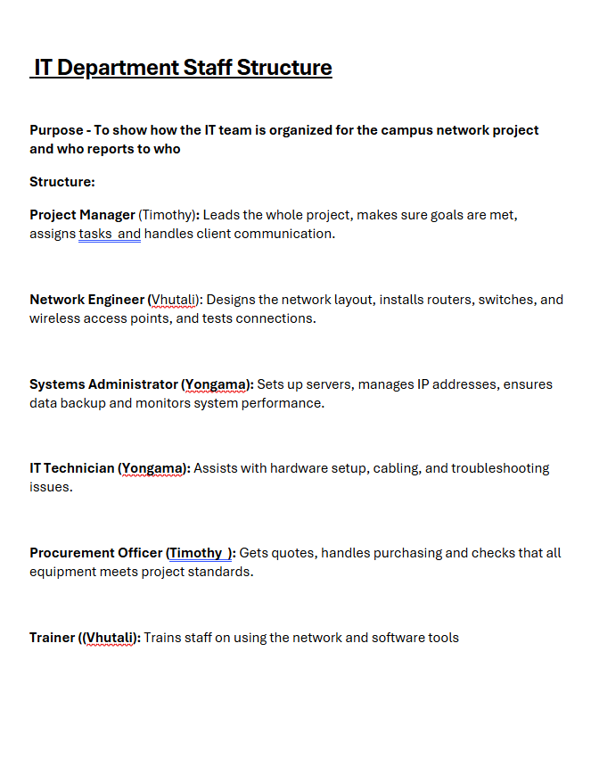
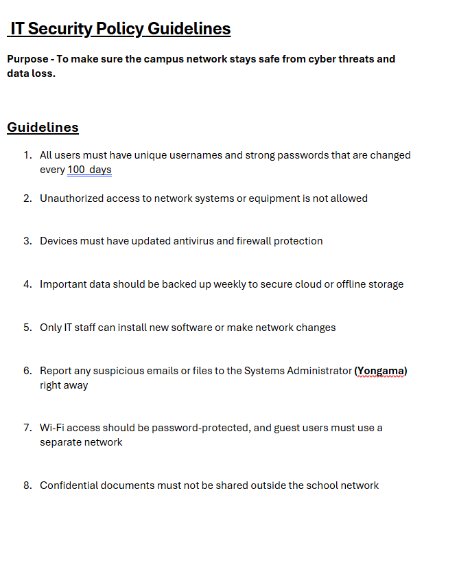
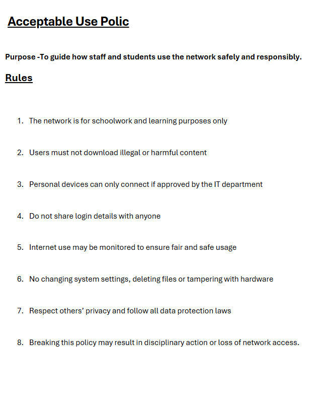
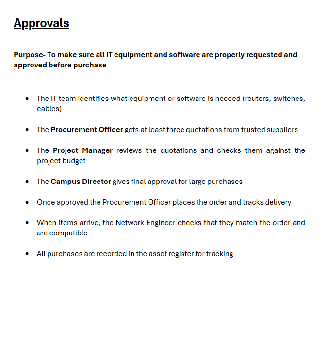
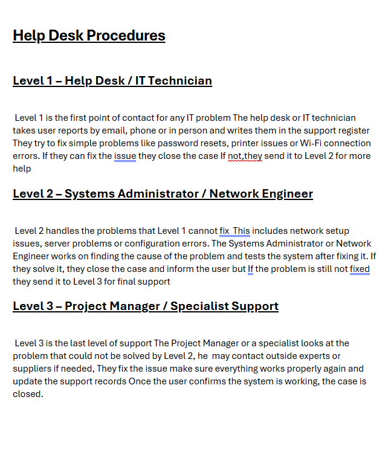
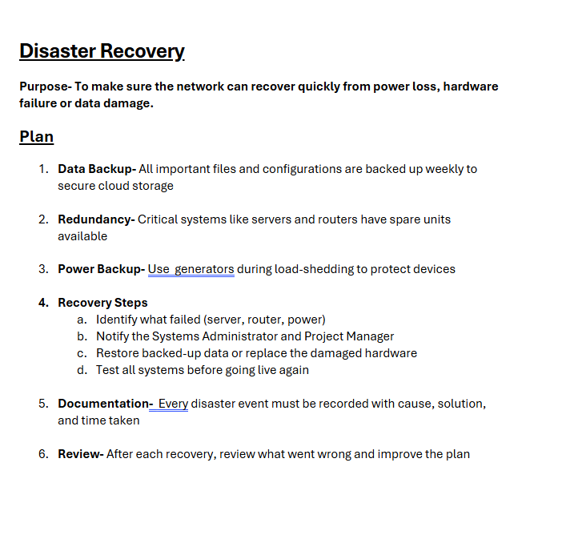

Standard Operating Procedures (SOPs)
Complete collection of IT department standard operating procedures and policies.
IT Department Staff Structure

IT Security Policy Guidelines

Acceptable Use Policy

Approvals Process

Help Desk Procedures

Disaster Recovery
